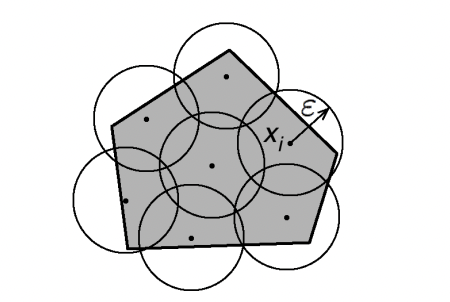
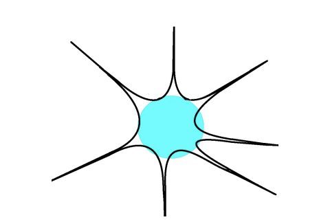

The notion of “High Dimensional” is playing an increasingly important role in Probability Theory and Theoretical Computer Science. High-dimensional objects are unexpectedly interesting because they often contradict our intuition derived from low-dimensional cases. In this blog post, I will discuss some intriguing properties of polytopes in high-dimensional spaces. (Most of the content is from the amazing book “High Dimensional Probability and Applications in Data Science”[Ver18] by Roman Vershynin and the corresponding Lecture Videos).
Defintion 1(Convex Combination). A convex combination of points \(z_1, . . . , z_m ∈ \R^n\) is a linear combination with coefficients that are non-negative and sum to \(1\), i.e. it is a sum of the form
\[ \sum_{i=1}^m\lambda_iz_i\quad\mathrm{where}\quad\lambda_i\geq0\quad\mathrm{and}\quad\sum_{i=1}^m\lambda_i=1.\tag{1} \]
Definition 2(Convex Hull). The convex hull of a set \(T ⊂ \R^n\) is the set of all convex combinations of all finite collections of points in \(T\):
\[ \mathrm{conv}(T):=\left\{\text{convex combinations of }z_1,\ldots,z_m\in T\mathrm{~for~}m\in\mathbb{N}\right\}. \]
Theorem 1(Caratheodory’s theorem). Every point in the convex hull of a set \(T ⊂ \R^n\) can be expressed as a convex combination of at most \(n + 1\) points from \(T\).
This theorem indicates that any given point in the convex hull can be represented by \(n+1\) points from the same hull. When considering an approximation case, could we use fewer points? This leads us to the following theorem.
Theorem 2(Approximate Caratheodory’s theorem). Consider a set \(T ⊂ \R^n\) whose diameter is bounded by \(1\). Then, for every point \(x ∈ \text{conv}(T)\) and every integer \(k\), one can find points \(x_1, . . . , x_k ∈ T\) such that
\[ \left\|x-\frac1k\sum_{j=1}^kx_j\right\|_2\leq\frac1{\sqrt{k}}. \]
There are two reasons why this result is surprising. First, the number of points \(k\) in convex combinations does not depend on the dimension \(n\). Second, the coefficients of convex combinations can be made all equal. (Note however that repetitions among the points \(x_i\) are allowed.)
Proof. Our proof is based on the empirical method of B. Maurey.
Firstly, we may assume w.l.o.g. that not only the diameter but also the radius of \(T\) is bounded by \(1\), i.e.
\[ \|t\|\le 1\text{ for all }t\in T \]
Fix a point \(x ∈ \text{conv}(T)\) and express it as a convex combination of some vectors \(z_1, . . . , z_m ∈ T\) as in (1). Now, interpret the definition of convex combination in (1) probabilistically, with \(λ_i\) taking the roles of probabilities. Specifically, we can define a random vector \(Z\) that takes values \(z_i\) with probabilities \(λ_i\):
\[ \mathbb{P}\left\{Z=z_i\right\}=\lambda_i,\quad i=1,\ldots,m. \]
Our next step is to bound \(\mathbb{E}\left\|x-\frac1k\sum_{j=1}^kZ_j\right\|_2^2=\frac1{k^2}\mathbb{E}\left\|\sum_{j=1}^k(Z_j-x)\right\|_2^2=\frac1{k^2}\sum_{j=1}^k\mathbb{E}\left\|Z_j-x\right\|_2^2\) . Since if we could prove \(\mathbb{E}\left\|x-\frac1k\sum_{j=1}^kZ_j\right\|_2^2\) is less than \(\frac 1k\), then there must exists \(k\) realizations \(Z_1,Z_2,…,Z_k\) of \(Z\) such that \(\left\|x-\frac1k\sum_{j=1}^kZ_j\right\|_2^2\leq\frac1k.\)
Note that \(\mathbb{E}\|Z_j-x\|_2^2=\mathbb{E}\|Z-\mathbb{E}Z\|_2^2=\mathbb{E}\|Z\|_2^2-\|\mathbb{E}Z\|_2^2\leq\mathbb{E}\|Z\|_2^2\leq1.\) We conclude the proof. \(\square\)
To go into the main topic of this blog post, here we introduce several concepts to characterize the “volume” of a high dimensional object.
Definition 3(\(\epsilon\)-net). Let \((T,d)\) be a metric space. Consider a subset \(K\subset T\) and let \(\varepsilon>0.\) A subset \(\mathcal{N}\subseteq K\) is called an \(\varepsilon\)-net of \(K\) if every point in \(K\) is within distance \(\varepsilon\) of some point of \(\mathcal{N}\), i.e.
\[ \forall x\in K\mathrm{~}\exists x_0\in\mathcal{N}:\mathrm{~}d(x,x_0)\leq\varepsilon. \]
Equivalently, \(\mathcal{N}\) is an \(ε\)-net of \(K\) if and only if \(K\) can be covered by balls with centers in \(\mathcal{N}\) and radii \(\varepsilon\).
Definition 4(Covering Number). The smallest possible cardinality of an \(ε\)-net of \(K\) is called the covering number of \(K\) and is denoted \(\mathcal N (K, d, ε)\). Equivalently, \(\mathcal N (K, d, ε)\) is the smallest number of closed balls with centers in \(K\) and radii \(ε\) whose union covers \(K\).

From Page 81 of the HDP book[Ver18].
An important property of the covering number is that it suffers from the “curse of dimensionity”.
Fact 1(The Covering Number of an Euclidean ball). Let \(K\) be a unit Euclidean ball in \(\R^n\) and \(d\) be the Euclidean distance, then we have
\[ \mathcal N(K,d,\frac12)\ge 2^n \]
Proof. Simply considering the volume of the unit Euclidean ball and each little ball to cover it. \(\square\)
Actually in most cases, the covering number would be exponential with respect to the dimension \(n\). While in the cases of polytopes with few vertices, the case is different.
Theorem 3(Covering Number of Polytopes). Let \(K\) be a polytope in \(\R^n\) with \(m\) vertices with diameter less than \(1\) and \(d\) be the Euclidean distance. Then
\[ \mathcal N(K,d, \varepsilon)\le m^{\frac1{2\varepsilon^2}} \]
Proof. Here we could assume that \(K\) is convex (if it is not, we could simply consider the convex hull of \(K\), and here we are considering the upper bound of covering numbers, so it is feasible). Donate by \(T\) the set of vertices, then \(K\) is the convex hull of \(T\) with \(|T|\le m\). Thus, we could apply the Approximate Caratheodory’s theorem, that is, any point \(p\) in \(K\) is within \(\frac{1}{\sqrt{2k}}\) of some point in the set \(\mathcal Q:=\left\{ \frac 1k \sum^k_{i=1}x_i: x_i \in T\right\}\). It exactly means any point in \(K\) could be covered by a ball centered at some point from \(\mathcal Q\) with radii \(\frac{1}{\sqrt{2k}}\). Hence, \(\mathcal N(K,d,\frac{1}{\sqrt{2k}})\le |\mathcal Q|\le|T|^k\), from which we could get the descired conclusion. \(\square\)
This theorem reveals an interesting fact: in a high-dimensional space, a polytope with \(O(\text{poly}(n))\) vertices is actually exponentially smaller compared to a ball. Moreover, to approximate a Euclidean ball with a polytope, this polytope must have an exponentially large number of vertices with respect to the dimension. The following theorem provides a characterization of the volumes of polytopes and Euclidean balls.
Theorem 4(Volumes of polytopes[CP88]). Let \(\mathcal B\) be an unit Euclidean ball in \(\R^n\) and \(P\subset \mathcal B\) a polytope with \(m\) vertices. Then
\[ \frac{\text{Vol}(P)}{\text{Vol}(\mathcal B)}\le\left(4\sqrt{\frac{\log m}{n}}\right)^n \]
Proof. From the argument above, we have
\[ \text{Vol}(P)\le\mathcal N(P,d,\varepsilon)\cdot\text{Vol}(\mathcal B_\epsilon)\le m^{\frac{2}{\varepsilon^2}}\cdot\varepsilon^n\text{Vol}(\mathcal B) \]
where \(\mathcal B_\varepsilon\) is an Euclidean ball in \(\R^n\) with radii \(\varepsilon\). Thus, we have \(\frac{\text{Vol}(P)}{\text{Vol}(\mathcal B)}\le m^{\frac{2}{\varepsilon^2}}\cdot\varepsilon^n\), then by simple calculation we have that the right side is upper bounded by \(\left(4\sqrt{\frac{\log m}{n}}\right)^n\). \(\square\)
Actually this upper bound is nearly tight, where the optimal bound is to replace \({\log m}\over n\) by \(\log \frac m n\). On the other hand, the bound we get here is optimal in the random polytope case[DGT09], which we construct by uniformly sampling on the boundary of an Euclidean ball and obtain their convex hull. So what would a polytope really look like in high dimensions? Here we present the Milman hyperbolic intuition[Mil98] in high dimensions. A convex body \(K\) in high dimensions will often looks like the following, consisting of a bulk and outliers. The bulk makes up most of the volume of \(K\), but it is usually small in diameter. The outliers contribute little to the volume, but they are large in diameter.

From Page 7[Ver15]
References
- [Mil98] V. Milman, Surprising geometric phenomena in high-dimensional convexity theory, European Congress of Mathematics, Vol. II (Budapest, 1996), 73–91, Progr. Math.,169, Birkh¨auser, Basel, 1998.
- [Ver15] R. Vershynin, Estimation in high dimensions: a geometric perspective. Sampling Theory, a Renaissance, 3–66, Birkhauser Basel, 2015.
- [DGT09] N. Dafnis, A. Giannopoulos, and A. Tsolomitis. Asymptotic shape of a random polytope in a convex body. J. Funct. Anal., 257(9):2820–2839, 2009.
- [CP88] B. Carl and A. Pajor. Gelfand numbers of operators with values in a Hilbert space. Invent. math., 94:479–504, 1988.
- [Ver18] R. Vershynin, High-Dimensional Probability: An Introduction With Applications in Data Science, vol. 47. Cambridge, U.K.: Cambridge Univ. Press, 2018.